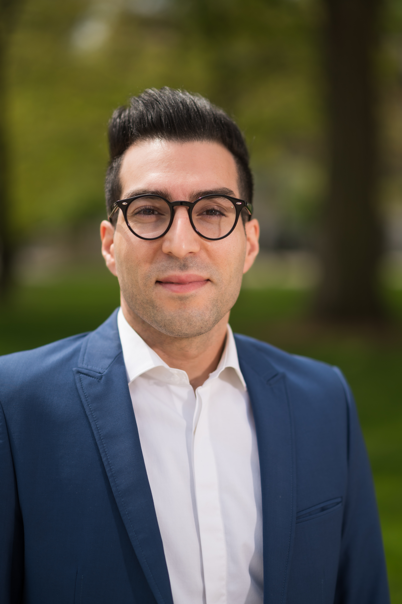

Dr. Sina Bahrami
Principal Investigator
Dr. Bahrami is a transportation-systems researcher who applies operations research, equilibrium analysis, and market design to emerging mobility. His research examines how infrastructure adapts to new vehicle technologies, how shared-economy platforms shape travel, and how cities move goods through their streets.
He earned his Ph.D. in Civil-Transportation Engineering at the University of Toronto under Prof. Matthew Roorda, then held postdoctoral positions at Toronto and the University of Michigan with Prof. Yafeng Yin. He was Assistant Professor at Eindhoven University of Technology from 2021 to 2023 and Assistant Research Scientist at Michigan from 2023 to 2026.
He serves on the editorial boards of Transportation Research Part E, Transportation Research Record, and Transportation Letters. His research has been covered by Forbes, IEEE Spectrum, Science Daily, and other outlets.
Current Lab Members
The lab is currently recruiting its inaugural cohort.
Open positions
Graduate students
The METRO Lab is recruiting two fully funded graduate students. Ideal candidates hold a background in transportation engineering, industrial engineering, or applied mathematics, and have a strong interest in applying operations research to emerging mobility problems.
To apply: send a brief statement (200–300 words) describing your research interests, prior work, and the problems you wish to pursue. Please attach a CV and an unofficial transcript.